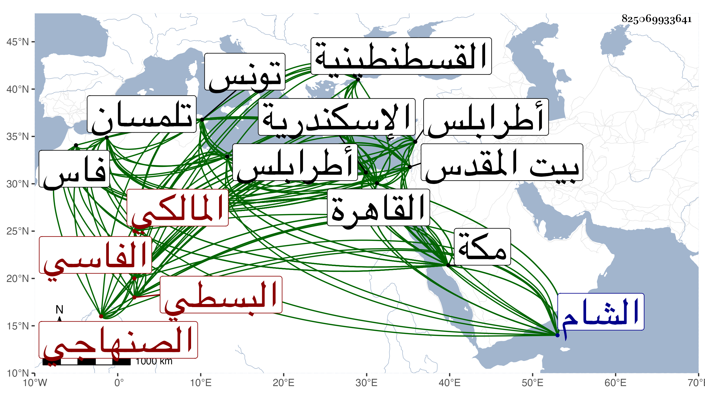

0902Sakhawi.DawLamic.ITO20230111-ara1.EIS1600.825069933641
Biography ID: 825069933641
أحمد بن حاتم بن محمد بن حاتم بن عبد الله البسطي الصنهاجي الحبسي الفاسي المالكي نزيل القاهرة ويعرف بين المصريين بحاتم . ولد في جمادى الثانية سنة إحدى وخمسين وثمانمائة بباب الحبسة من فاس ونشأ بها فحفظ القرآن والرسالة والجرومية وألفية ابن مالك وغيرها وأخذ بتلمسان عن جماعة منهم يحيى بن أحمد بن أبي القسم العقباني ومحمد بن الجلاب وبقسطنطينية عن ابن القسم بن أبي الحديد بل حضر بتونس عند إبراهيم الخدري وقرأ بطرابلس المعرب على أحمد حلولو القروي في آخرين بهذه وغيرها كإبراهيم الناجي وأخذ عنه الفقه والفرائض وحضر عند أبي عبد الله التريكي وتحول إلى القاهرة في سنة ثلاث وسبعين فأخذ بها عن البرهان الأنصاري في الرسالة وارتفق به وبأخيه وحج معه في سنة أربع وسبعين وعن السنهوري والنور بن التنسي وكذا التقي الحصني وحضر عند سيف الدين الحنفي في التفسير والأصول والأمين الأقصرائي قرأ على البدر بن القطان ايساغوجي وبعض الشمسية في آخرين منهم بالاسكندرية شعبان بن جنيبات وأجاز له الشاوي واختص بتمر الوالي وبغيره من الأمراء ، وحج غير مرة الثانية في سنة إحدى وثمانين وجاور التي تليها وكذا في سنة ثمان وثمانين إلى موسم سنة أربع وتسعين ، ودخل القاهرة في أوائل سنة خمس فدام السنة التي بعدها ، وتزايد اختصاصه بالملك وصار يبيته عنده في بعض ليالي الأسبوع مع اختصاصه قبل ذلك بالأتابكي أيضا وبالغ كل منهما في إكرامه واقتفى أثرهما غير واحد كما سافر لزيارة بيت المقدس ثم دخل منه الشام وعاد إلى القاهرة ثم إلى مكة في موسمها ولم يلبث أن أصيب في مال غدي عليه وتعددت أملاكه بمكة وجافى شافعيها مع مزيد إكرامه وحنبليها وغيرهما وخالطه كثيرون لأطماعه لهم بالقراءة وغيرها بحيث صار ممن يرغب ويرهب ثم رجع إلى القاهرة وجرى على عادته في الطلوع والدوران إلى أن ضعف وهو الآن أثناء سنة تسع وتسعين ولم يزل يظهر لي زائد التودد والتردد بكل من البلدين ويوهم ما لا يخفى علي وربما يقول لي إذا ذكرتني لأحد فلا تصفني إلا بالصلاح دون العلم وكأنه علم كساد سوقه في معرفته لشأنه عندهم على أنه وأقرأ بالقاهرة قليلا ثم بمكة في الفقه وغيره ورأيت منه استحضارا في الفقه وبعض مشاركة واستحضارا لكثير من أحوال بعض أئمة المغاربة وإتقانا فيما يبديه ، وتميز في الطب مع مزيد عقل وخبرة زائدة بمداخلة الناس واستجلاب الخواطر بحيث صحب مع من أشرنا إليه أكابر الأمراء والمباشرين فمن دونهم وحمد من بعضهم في مخالطته لهم ومرابطته معهم ولسانه محفوظ وعقله ملحوظ وقد تنزل في جهات وقررت له مرتبات سوى الهوائي .
